01 — Summary요점과 역할
- 네비게이션 메시 — Cell · Navigation · Region · Stage를 직접 구현. 이동 검사, 점프 · 낙하, 경계 위치 보정
- 툴과 엔진의 연결 — 툴의 꼭짓점 스냅과 엔진의 이웃 연결 규칙을 맞춘 저장 · 불러오기
- A* 길찾기 — 셀 그래프 위 경로 탐색을 프레임마다 한 단계씩 진행하고, 가시선 검사로 경로 직선화
- 몬스터 AI 4종 — 미라 · 미노타우르스 · 할리퀸 · 아누비스의 상태 전환 조건
- 플레이어 로직 — 콤보 · 스킬 3종 · 구르기 · 넉백과 기상
- ImGui 편집 툴 2종 — 네비게이션 메시 편집, 모델 배치(레벨 구성)
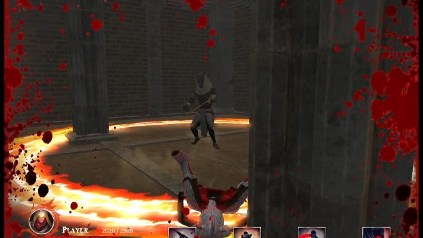
Code Dungeon 발표 영상 (4:03부터) · YouTube02 — Data Flow툴에서 게임까지
네비게이션 메시는 툴에서 찍어 파일로 저장하면 엔진이 읽어 들이고, 게임에서는 캐릭터마다 나눠 사용합니다. 아래 그림은 각 단계가 앞 단계에 기대는 조건을 한 장에 정리한 것입니다.
_EDIT_NAVI 빌드 플래그 블록에 있고, Tool 프로젝트의 NavigationView가 이를 호출합니다.툴 좌표 보정 — 엔진은 두 셀이 한 변의 두 꼭짓점 좌표를 정확히 같게 가질 때만 그 변으로 이웃을 연결합니다(XMVector3Equal 비교). 마우스로 찍은 점은 조금씩 어긋나므로, 툴에서 기존 꼭짓점 반경 1.5 안을 찍으면 그 꼭짓점 좌표를 그대로 쓰게 했습니다. 이 스냅이 있어야 엔진의 연결 조건이 맞습니다.
04 — Movement · Camera이동 · 카메라
- 점프 가능 셀 — 셀에 점프 가능 토글을 두고, 그 셀에서 경계를 넘으면
FindCell로 아래 셀을 찾아 낙하를 시작합니다. y가 셀 높이보다 낮아지면 착지로 보고 위치를 맞춥니다. 점프 · 낙하 중이 아니면 셀 높이를 탑니다. - 경계 위치 보정 — 현재 셀 밖으로 나가면 셀의 세 변 중 가장 가까운 변 위의 점으로 XZ만 옮기고 높이는 유지합니다. 그 점이 꼭짓점이면 그 꼭짓점을 공유하는 이웃 셀로 현재 셀을 바꿉니다. 이 보정은 몬스터와 카메라에 사용합니다.
- 카메라 — 카메라는 자기 Navigation과 스폰 셀을 따로 둡니다. 플레이어와 30 이내면 이동에 실패할 때 XZ만 경계로 보정하고 높이는 유지합니다. 30을 넘으면 플레이어 위치로 되돌리고 그 자리의 셀을 다시 찾습니다.
05 — Monster AI몬스터 4종
팀장이 만든 애니메이션 컨트롤러 프레임워크가 상태에 맞는 애니메이션을 재생하고 루트 모션을 처리합니다. 저는 그 위에서 몬스터마다 상태를 바꾸는 조건(거리 · 피격 횟수 · 타이머)을 작성했습니다.
- 감지 · 해제 거리 분리 — 감지 거리 안으로 들어오면 추적을 시작하고, 그보다 먼 해제 거리 밖으로 나가야 추적을 멈춥니다(
CMob::SearchForPlayers). 경계 근처에서 추적이 켜졌다 꺼졌다 깜빡이지 않게 하는 이중 임계값입니다. - 추격 이동 — A* 경로는 방향만 정합니다(
MoveAlongPath는 다음 목표 점만 갱신). 실제 이동은 현재 애니메이션 상태별 고정 속도로 옮깁니다. - 배회 · 복귀 — 플레이어를 찾지 못하면 미라 · 미노타우르스 · 할리퀸은 5초마다 이웃 셀을 무작위로 세 번 건너간 셀을 골라 그쪽으로 경로를 찾습니다. 아누비스는 원래 자리로 돌아갑니다.
| 몬스터 | 감지 / 해제 | 패턴 |
|---|---|---|
| 미라 | 50 / 80 | 누운 형태 · 선 형태 2종. 범위에 들어오면 관이 열리며 일어나 도발 후 추적. 손 휘두르기 2종, 맞으면 짧은 경직. 멀어지면 주변 이웃 셀을 골라 배회 |
| 미노타우르스 | 100 / 120 | 발차기로 멀리 넉백. 플레이어가 쓰러져 있으면 물러났다가 달려와 더 강한 발차기(아래 상태도). 보스라 세 번 피격까지만 피격 애니메이션 · 경직, 이후 5초는 리액션 없이 공격(데미지는 그대로) |
| 할리퀸 | 80 / 150 | 전용 방에서 전투. 탐지 시 도발로 시작. 멀면 전방 3방향 수리검, 중간이면 점프 돌진, 가까우면 백스텝 · 회축 · 덤블링 발차기. 수리검마다 네비게이션 메시를 달아 기둥 · 벽을 뚫지 않음 |
| 아누비스 | 70 / 80 | 특정 위치를 지킴. 일정 시간마다 8초 보호막(그동안 피해 없음, 근접 시 넉백). 중거리(15–40)에서 마법진, 근접 시 밀쳐내기. 계단 때문에 높이 차가 있으면 마법진 대신 다가감. 플레이어가 죽거나 멀어지면 원래 자리로 복귀 |
상태 이름은 코드의 트리거 이름입니다. 전환 조건 작성: 본인 · 애니메이션 재생 프레임워크(컨트롤러 · 루트 모션): 팀장.
CMummyAnimController.cpp, 감지 · 해제 거리와 배회 경로 주기는 CMummy.cpp에 있습니다.CHarlequinnAnimController.cpp, 감지 · 해제 거리는 CHarlequinn.cpp에 있고, 피격 뒤 쉬는 시간은 HIT_COOLDOWN_DURATION 상수로 둡니다.CAnubisAnimController.cpp, 감지 · 해제 거리, 보호막 8초, 원래 자리로 가는 경로는 CAnubis.cpp에 있습니다.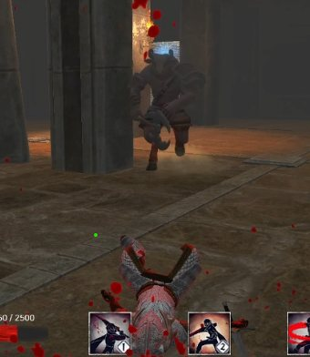
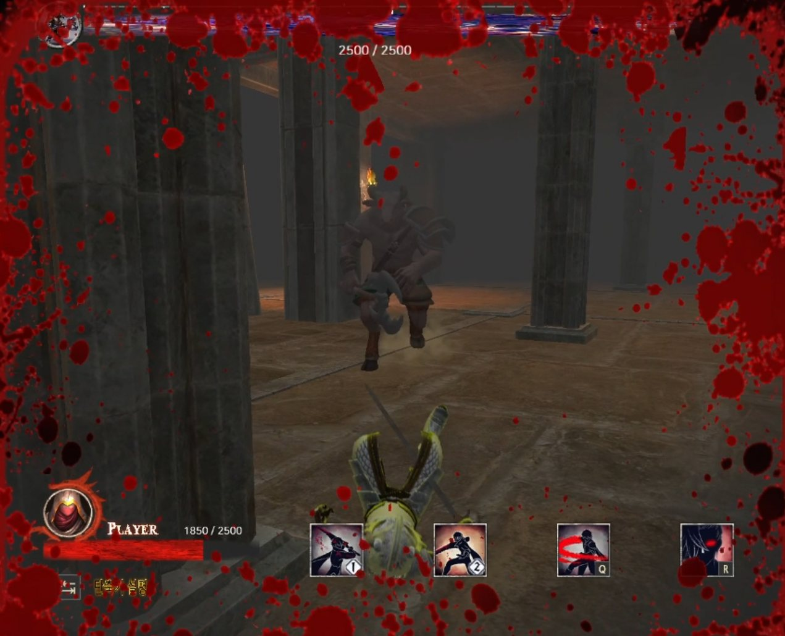
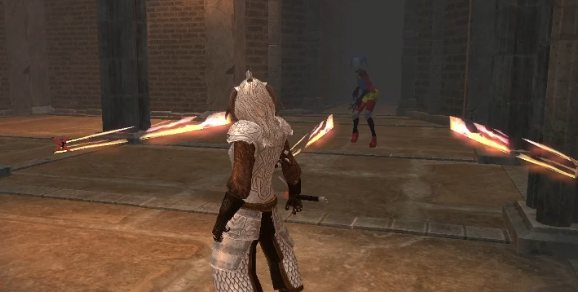
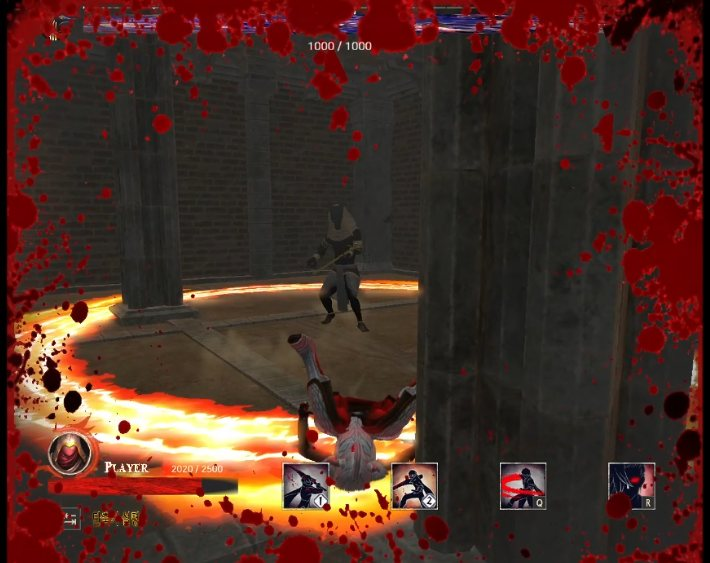
06 — Player플레이어
- 콤보 — 좌클릭 · 우클릭 각각 3단계. 앞 단계가 재생 중일 때 다시 눌러야 다음 단계로 이어지고, 아니면 1단계부터 시작합니다.
- 스킬 3종(Q · 1 · 2) — 각자 쿨타임이 있고, 다른 스킬이 시전 중이면 시작하지 않아 동시에 쓸 수 없습니다.
- 점프 제한 — 구르기 · 피격 · 기상 · 콤보 · 스킬 동작 중에는 점프 입력을 받지 않습니다.
- 구르기 — 구르기 · 점프 · 기상 중에는 피격 콜라이더 크기를 0으로 줄이고, 구르다 벽에 닿으면 직전 위치로 되돌립니다.
- 넉백 · 기상 — 넉백 공격에 맞으면 몬스터가 보는 방향으로 플레이어를 돌린 뒤, 넉백 애니메이션의 루트 모션으로 약 1.75초 동안 밀어냅니다. 2초가 지나면 Space로 일어나고, 기상 중에는 피격을 무시합니다. 아누비스 보호막에 밀릴 때는 아누비스가 보는 방향의 반대로 돌립니다.
CUserWarriorAnimController.cpp, 넉백 판정은 CWarriorPlayer.cpp 충돌 처리). 상태 이름은 코드의 트리거 이름이고, 시간은 코드의 경과값(초 × 20)을 초로 바꾼 값입니다. 전환 조건 작성: 본인 · 애니메이션 재생 프레임워크: 팀장.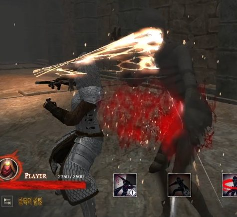
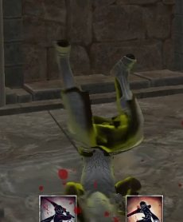
07 — Path FindingA* 길찾기
네비게이션 메시의 셀을 노드로 삼아 몬스터가 플레이어까지의 경로를 찾습니다.
- 비용 — 노드에
F = g + h를 두고 우선순위 큐로 정렬합니다. 간선 비용 g와 휴리스틱 h 모두 셀 중심 사이의 3D 맨해튼 거리(|dx| + |dy| + |dz|)를 사용합니다. 맵이 실내 던전이라 기둥 같은 장애물이 많아, 이 거리가 더 유리하다고 판단했습니다. - 프레임 분할 — 탐색 상태(열린 목록, 비용, 이전 셀, 완료 여부, 경로)를 구조체에 담아 한 프레임에 노드 하나씩 진행합니다.
- 도착 판정 — 몬스터의 현재 셀과 플레이어의 현재 셀은 같은 셀 컨테이너의 원소라 포인터로 비교합니다.
- 재탐색 — 플레이어를 쫓는 몬스터는 1초마다(아누비스는 0.5초) 경로를 다시 찾습니다.
- 직선화 — 메시 위에서 2.0 간격으로 가시선 검사를 해 직선으로 갈 수 있는 중간 점은 건너뛰어 지그재그 움직임을 줄였습니다.
OptimizePath는 마지막으로 남긴 점에서 다음 점까지 2.0 간격으로 셀 안인지 검사하고, 통과하면 그 사이 점을 생략합니다.if (GetTimeAccumulator() >= 1.0) { // 1초마다 새로 시작
m_PathFindingState = spNavigation->StartPathFinding(
CurrentMobPos, CurrentPlayerPos, CurrentMobCell, CurrentPlayerCell);
m_isPathFinding = true;
SetTimeAccumulator(0.0);
}
if (m_isPathFinding) {
if (spNavigation->StepPathFinding(m_PathFindingState)) { // 프레임당 노드 하나
m_isPathFinding = false;
if (m_PathFindingState.pathFound) {
m_AstarPath = spNavigation->OptimizePath( // 가시선으로 직선화
m_PathFindingState.path, CurrentMobPos, CurrentPlayerPos);
m_currentPathIndex = 0;
}
}
}08 — ImGui Tools편집 툴 2종
편집 로직은 엔진의 Region · Stage에 빌드 플래그(_EDIT_NAVI)로 넣고, Tool 프로젝트의 NavigationView가 이를 호출합니다. 모델 배치(레벨) 툴도 같은 Tool 프로젝트에 있습니다.
네비게이션 편집
맵 모델을 띄우고 픽킹으로 셀을 찍어 메시를 만듭니다. 「Modify Navigation」을 켜면 편집이 시작됩니다.
- 셀 생성 — 픽킹할 때마다 그 위치에 큐브를 두고, 세 번째 클릭에서 셀을 만듭니다. 기존 꼭짓점 반경 1.5 안을 찍으면 그 꼭짓점 좌표를 그대로 써서 엔진이 이웃으로 연결하게 했습니다(02 참고).
- 셀 번호 — 새 셀의 번호는 그때까지의 셀 개수, 즉 만든 순서입니다. 셀을 지우면 번호를 다시 매기고 이웃을 다시 계산합니다.
- 되돌리기 — BackSpace로 꼭짓점 설정 중이면 마지막 픽킹을, 아니면 마지막 셀을 지웁니다.
- 지연 삭제 — ImGui가 셀 목록을 순회하는 도중 삭제하지 않도록, 지울 셀을 set에 모아 다음 Tick 맨 앞에서 한꺼번에 지우고 번호 재부여 · 이웃 재계산을 합니다. 엔진
UActorGroup과 같은 지연 삭제 패턴입니다. - 렌더 범위 지정 — 셀이 많아지면 디버그 큐브도 늘어 프레임이 떨어져, 그릴 셀의 번호 범위를 정할 수 있게 했습니다.
- 셀 검사 — Pick_On_Cell로 셀을 골라 번호 · 이웃 번호를 보고, 점프 가능 여부를 바꾸거나 지웁니다. 번호 오류를 이웃 정보로 찾아 고쳤습니다.
- 저장 · 불러오기 — Region마다 이름을 붙여
Navigation폴더에 파일로 저장하고, 폴더째 다시 불러옵니다.
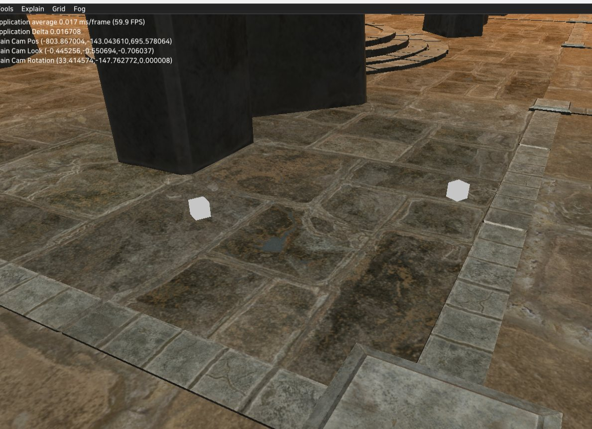
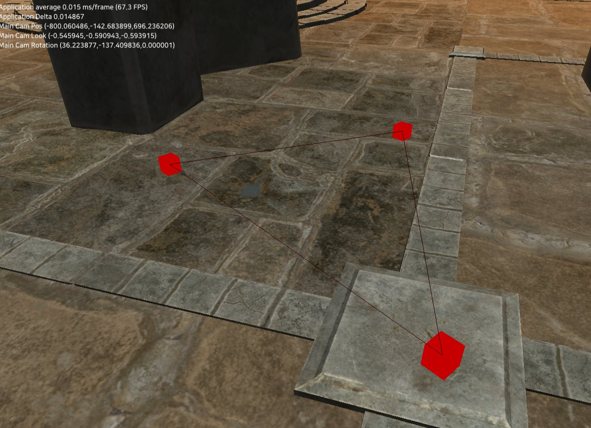
모델 배치(레벨) 툴
맵 모델 · 오브젝트 · 몬스터의 변환을 한 화면에서 편집하고 바이너리 파일로 저장해 클라이언트에서 불러 쓰는 레벨 툴입니다.
맵 모델 · 오브젝트 · 몬스터 모델을 목록에서 골라 배치하고, 배치 묶음을 MapLayouts로 저장하고 불러옵니다. 일반 모델(ModelViewer)과 애니메이션 모델(AnimModelViewer)을 따로 다루고, ImGuizmo로 이동 · 회전 · 크기를 직접 조작합니다.
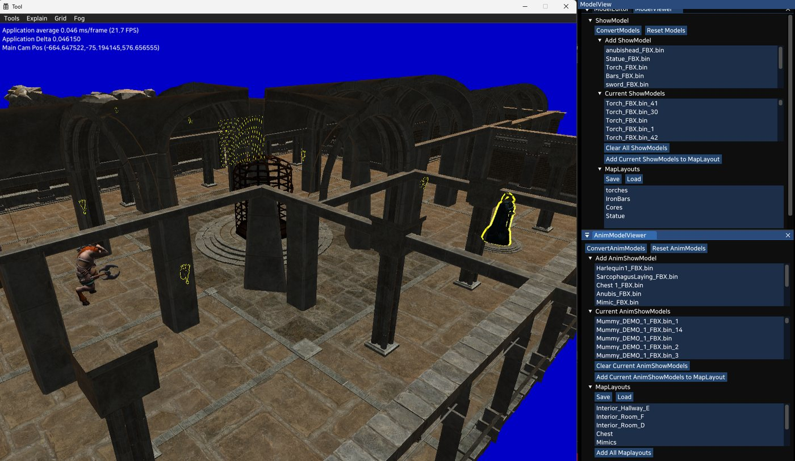
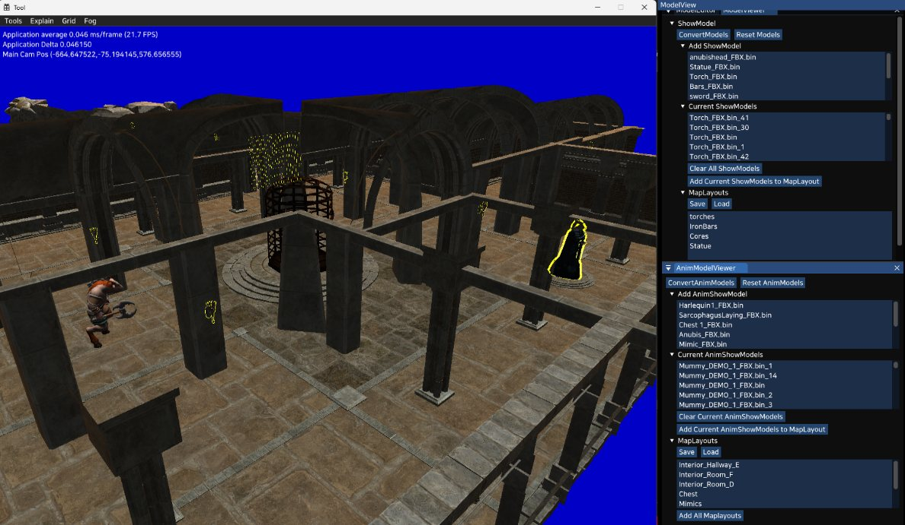
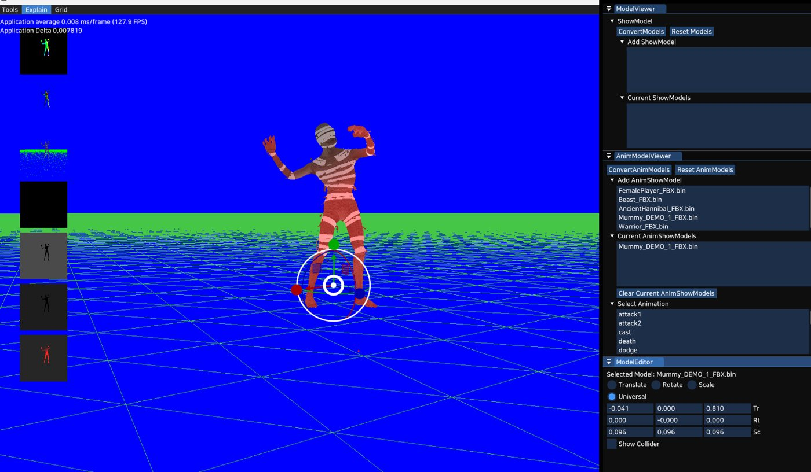
09 — Limits한계와 다시 만든다면
| 한계 | 다시 만든다면 |
|---|---|
| 셀 번호 하드코딩 | 플레이어 시작(23), 캐릭터 Navigation 시작(703), 게임 종료 트리거(1141)가 셀 번호에 묶여 있어, 툴에서 셀 하나만 지워도 번호가 당겨져 어긋납니다. → 맵에 스폰 · 트리거 마커를 두고 위치로 셀을 찾겠습니다. |
| 네비게이션 툴 최적화 | 셀이 많아지면 꼭짓점마다 그리는 디버그 큐브가 늘어 편집 중 프레임이 떨어졌고, 그릴 셀의 번호 범위를 정하는 것으로만 피했습니다. → 큐브를 한 번에 그리는 인스턴싱이나 화면에 보이는 셀만 그리는 방식으로 바꾸겠습니다. |
| 편집 코드가 엔진에 섞임 | 편집 로직이 엔진 URegion · UStage 안 _EDIT_NAVI 블록에 있습니다. → Tool 쪽 래퍼로 분리하겠습니다. |
| 저장 포맷에 버전 없음 | 셀 정보를 순서대로 기록할 뿐이라 구조가 바뀌면 옛 파일을 구분할 수 없습니다. → 매직 · 버전 헤더를 두겠습니다. |
| 몬스터 로직 중복 | 몬스터 4종이 추격 · 배회 · 복귀의 경로 탐색 블록을 각자 가지고 있습니다. → CMob 또는 경로 추종 컴포넌트로 모으겠습니다. |
| A* 1초 재시작 | 프레임당 노드 하나라 60fps 기준 초당 약 60노드를 봅니다. 1초마다 새로 시작하므로 그보다 먼 경로는 끝나기 전에 다시 시작될 수 있습니다. → 프레임당 노드 예산을 두고, 탐색 중에는 재시작을 미루겠습니다. |
| 이웃 셀 조회가 선형 탐색 | A*가 이웃 번호로 셀을 찾을 때 컨테이너 전체를 돌며 번호를 비교합니다. → 번호와 배열 위치를 일치시켜 바로 인덱싱하겠습니다. |